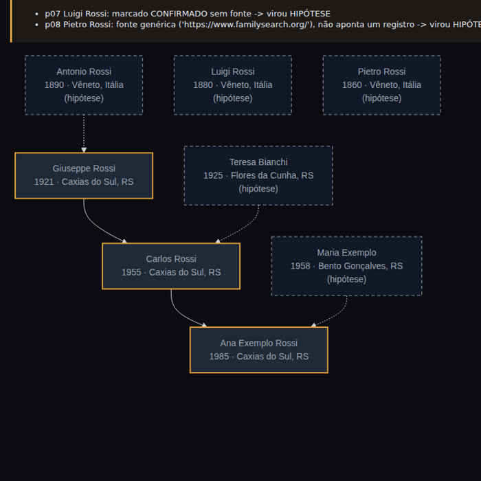

Mito êâ verdade ê· genealogia com IA
Sua ê¡rvore genealê³gica com IA, sem parentes inventados
O vêÂdeo viral promete ê¡rvore completa, parentes desconhecidos e atê© cidadania. Uma parte funciona. A outra ê© onde a IA alucina.

O vêÂdeo viral promete ê¡rvore completa, parentes desconhecidos e atê© cidadania. Uma parte funciona. A outra ê© onde a IA alucina.
Este ê© um guia gratuito para montar a ê¡rvore genealê³gica da sua famêÂlia usando um chat de IA (ChatGPT, Claude, Gemini) do jeito certo. Ele explica o que o vêÂdeo viral "o ChatGPT acha seus parentes" acerta e onde a IA inventa pessoas. Traz 8 prompts prontos que obrigam a IA a mostrar a prova, a lista de acervos onde pesquisar de verdade e um checklist para conferir cada nome. Para usar, basta um chat de IA e, se quiser a ê¡rvore desenhada, Python 3.
Quatro pedidos ao chat e uma promessa de cidadania. Veja o que se sustenta e por quêª.
| Promessa | Funciona? | Por quêª |
|---|---|---|
| 1. "Me pergunta tudo e monta minha ê¡rvore inicial" | ê¢Å⦠Sim | A IA sê³ organiza o que vocêª contou. Nê£o hê¡ o que inventar. |
| 2. "Conta a histê³ria da minha linhagem pelo sobrenome" | ê¢Å¡Â ê¯Â¸Â Meia verdade | A origem do sobrenome ê© genê©rica. Mesmo sobrenome nê£o ê© mesma famêÂlia. |
| 3. "Pesquise registros e ache parentes que eu nê£o tenho" | ê¢ÂÅ Inventa | As bases boas pedem login ou sê£o pagas, e muito registro brasileiro nê£o estê¡ indexado na internet. Com nomes comuns, a IA junta homê´nimos (pessoas diferentes com o mesmo nome) e preenche os buracos com gente plausêÂvel. "Nomes que vocêª nunca ouviu falar" ê© justamente o perigo. |
| 4. "Monta a ê¡rvore visual completa" | ê¢Å⦠Desenha | Mas o desenho nê£o deixa verdadeiros os nomes do passo 3. |
| + "Vocêª vai encontrar uma cidadania" | ê¢ÂÅ Exagero | Cidadania se prova com certidêµes. E as regras ficaram mais duras: a Itê¡lia limitou a cidadania por descendêªncia em 2025 (Lei 74/2025), e Portugal mudou a lei da nacionalidade em 2025ê¢â¬â2026, com partes questionadas no Tribunal Constitucional. Informaê§ê£o conferida em novembro de 2026: confirme no consulado. |
Um modelo de linguagem escreve o texto mais provê¡vel, nê£o o mais verdadeiro. Sem achar o registro, a resposta "provê¡vel" ê© uma lista de nomes com cara de real.
Organizar o que vocêª sabe, ler caligrafia antiga, traduzir latim e italiano de registro, sugerir onde procurar, montar a lista de documentos.
Sê³ o teste de DNA de genealogia acha primos que vocêª nê£o conhece sem partir de um documento. A IA nê£o faz isso.
Comeê§a nos vivos, passa pelos documentos e sê³ pêµe na ê¡rvore quem tem prova.
Nada pago ê© obrigatê³rio.
ChatGPT, Claude ou Gemini. Para o passo 5, ligue a pesquisa na web do chat (o botê£o de busca ou o modo agente, quando o seu plano tiver). Para ler documentos, mande a foto pelo clipe de anexo.
Gratuita, com cadastro, em familysearch.org. êâ° o maior acervo grê¡tis de registros, inclusive do Brasil.
Sê³ para o passo 8. No Linux jê¡ vem; no Windows e no Mac, instale em python.org (no Windows, marque Add python.exe to PATH na primeira tela do instalador). Baixe o projeto pelo botê£o verde Code ê¢â â Download ZIP no GitHub e descompacte, ou use o git:
git clone https://github.com/linnoff88-dev/arvore-genealogica-ia cd arvore-genealogica-ia
Os prompts estê£o tambê©m na pasta prompts/ do repositê³rio. Todos têªm a mesma regra: sem prova, nê£o entra.
Comece pelos vivos. A IA faz as perguntas e monta o roteiro para vocêª conversar com o parente mais velho.
Tudo vira uma tabela com a coluna fonte e a coluna status. êâ° ela que o script desenha no passo 8.
CSV ê© uma tabela em texto, com as colunas separadas por vêÂrgula. Para salvar: copie a resposta, cole no Bloco de Notas (Windows) ou no TextEdit em modo texto simples (Mac) e salve como minha-familia.csv dentro da pasta do projeto. Ou cole no Google Planilhas e baixe como .csv. No Bloco de Notas, em "Tipo", escolha "Todos os arquivos" (senê£o vira .csv.txt), e nê£o copie as linhas com ``` se o chat puser (o script tambê©m as ignora). O script aceita vêÂrgula ou ponto e vêÂrgula e o status com ou sem acento.
Aqui a IA ê© excelente: caligrafia difêÂcil, latim, italiano, alemê£o. Vocêª confere com a imagem.
A IA sugere acervos e cartê³rios. Vocêª abre cada link antes de confiar.
A versê£o segura do "ache parentes que eu nê£o tenho". Use num chat que navega na web: no app do ChatGPT, toque no + ao lado da caixa de texto e escolha a busca na web (ou o modo agente, se o seu plano tiver). Os nomes dos botêµes mudam com as versêµes do app.
Jê¡ tem uma lista que a IA "achou"? Abra um chat novo (sem o histê³rico) e peê§a a auditoria.
A IA organiza o caminho; quem decide ê© a lei e o consulado. Peê§a a data da informaê§ê£o. Os termos do prompt (inteiro teor, apostila de Haia, traduê§ê£o juramentada) estê£o no glossê¡rio.
Abra o terminal dentro da pasta do projeto: no Windows, abra a pasta no Explorador de Arquivos, clique na barra de endereê§o, digite powershell e aperte Enter; no Mac, clique com o botê£o direito na pasta ê¢â â Serviê§os ê¢â â Novo Terminal na Pasta; no Linux, botê£o direito ê¢â â Abrir no terminal. Depois rode o script com a tabela do passo 2. Ele tambê©m confere: quem estê¡ CONFIRMADO sem fonte (ou sê³ com o endereê§o do site) vira hipê³tese, e idades impossêÂveis de pai ou mê£e geram aviso.
# Mac e Linux python3 scripts/arvore.py minha-familia.csv --saida minha-arvore.html # grava minha-arvore.html python3 scripts/arvore.py minha-familia.csv --so-confirmados --saida so-provas.html python3 scripts/arvore.py modelos/pessoas.csv --saida exemplo.html # famêÂlia fictêÂcia de exemplo # Windows (PowerShell) py scripts\arvore.py minha-familia.csv --saida minha-arvore.html py scripts\arvore.py minha-familia.csv --so-confirmados --saida so-provas.html py scripts\arvore.py modelos\pessoas.csv --saida exemplo.html
O script sê³ grava o arquivo: dêª dois cliques em minha-arvore.html na pasta para abrir no navegador (precisa de internet para desenhar). Sem computador? Peê§a ao chat: "desenhe esta tabela em Mermaid, HIPOTESE com borda tracejada, sem acrescentar ninguê©m" e cole o resultado em mermaid.live para ver o desenho. Para levar a ê¡rvore a um site de genealogia, o formato padrê£o ê© o GEDCOM (.ged): monte a ê¡rvore direto no FamilySearch ou no MyHeritage, ou peê§a ao chat para converter a tabela em GEDCOM e importe no site.
Comece em casa: certidêµes, carteiras de trabalho, passaportes, cartas e fotos com anotaê§ê£o atrê¡s. Depois, estes acervos.
| Onde | O que tem | Custo |
|---|---|---|
| FamilySearch (familysearch.org) | Registros civis e paroquiais de vê¡rios estados do Brasil e do mundo. Muitos sê³ em imagem, sem busca por nome: ê© preciso folhear. | Grê¡tis |
| Cartê³rio de registro civil | A certidê£o de inteiro teor (cê³pia fiel do livro) ê© a que vale para cidadania. Pedido no cartê³rio ou pela internet. | Pago |
| Parê³quias e cêºrias | Batismos, casamentos e ê³bitos de antes do registro civil se generalizar. | Varia |
| Arquivos pêºblicos e Arquivo Nacional | Imigraê§ê£o, naturalizaê§ê£o, inventê¡rios. O Arquivo Nacional guarda listas de passageiros de navios que chegaram ao Rio. | Grê¡tis |
| Museu da Imigraê§ê£o (SP) | Registros da Hospedaria de Imigrantes e listas de bordo. | Grê¡tis |
| Hemeroteca Digital (Biblioteca Nacional) | Jornais antigos: casamentos, falecimentos, chegada de navios. | Grê¡tis |
| Portal Antenati (Itê¡lia) | Registros civis dos arquivos de Estado italianos. | Grê¡tis |
| Digitarq (Portugal) | Registros paroquiais digitalizados dos arquivos distritais. | Grê¡tis |
| Matricula (Alemanha, êÂustria, Polê´nia) | Livros paroquiais catê³licos. | Grê¡tis |
| Szukaj w Archiwach e Geneteka (Polê´nia) | Arquivos estatais poloneses digitalizados e êÂndice de registros paroquiais e civis feito por voluntê¡rios. | Grê¡tis |
| Teste de DNA (MyHeritage, Ancestry e outros) | Compara seu DNA com o de outras pessoas testadas e aponta primos reais. Cada empresa compara com a prê³pria base; alguns sites aceitam o arquivo de DNA de outra empresa (upload), o que amplia a busca. DNA ê© dado sensêÂvel: leia a polêÂtica de privacidade. | Pago |
Passe cada pessoa nova por esta lista. Sem todos os itens, ela fica como HIPêâTESE.
ê¢â¡ Tem fonte (link de registro ou documento)?
ê¢â¡ Eu mesmo abri o link, e ele mostra essa pessoa?
ê¢â¡ Nome, data e local batem (inclusive grafia antiga)?
ê¢â¡ A idade dos pais faz sentido?
ê¢â¡ O registro cita pais ou cê´njuge jê¡ confirmados? Esse ê© o elo que separa parente de homê´nimo.
ê¢â¡ Para a ligaê§ê£o que leva ê cidadania, hê¡ dois documentos?
Link que nê£o abre ou mostra outra pessoa ê· "segundo registros pêºblicos" sem dizer qual ê· datas redondas demais ê· gente que encaixa perfeitamente no que vocêª contou ê· a fonte muda quando vocêª pergunta de novo.

scripts/arvore.py com a famêÂlia fictêÂcia de exemplo: confirmados com borda ê¢mbar, hipê³teses tracejadas. "Luigi" foi marcado como confirmado sem fonte, e o script o rebaixou.Para ninguê©m travar no meio do caminho.
Quando a IA inventa algo com cara de verdade: um nome, uma data, um registro que nê£o existe.
Pessoa diferente com o mesmo nome. O maior risco da genealogia: achar o "Josê© Rossi" errado.
Registro que dê¡ para achar digitando o nome. Nê£o indexado = sê³ a foto do livro: ê© preciso folhear pê¡gina por pê¡gina.
Batismo, casamento ou ê³bito anotado no livro da igreja. Antes do cartê³rio, era o principal registro.
Certidê£o que copia o registro completo do livro do cartê³rio, com pais, avê³s e anotaê§êµes. êâ° a que vale para cidadania.
Selo feito no cartê³rio que faz um documento brasileiro valer em outro paêÂs.
Traduê§ê£o oficial, feita por tradutor pêºblico registrado, exigida em processos de cidadania.
Tabela salva como texto, com colunas separadas por vêÂrgula. Abre no Excel e no Google Planilhas.
Mermaid ê© uma linguagem que vira desenho de diagrama. GEDCOM (.ged) ê© o arquivo padrê£o que leva uma ê¡rvore de um site de genealogia para outro.
Genealogia de verdade ê© devagar. Isso ê© bom: cada nome que entra fica.